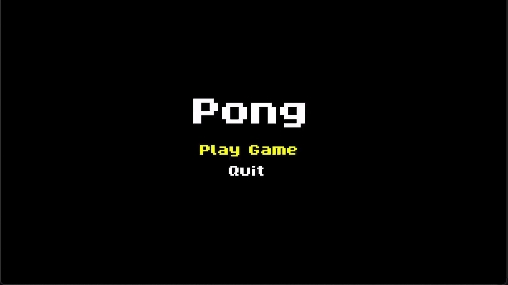
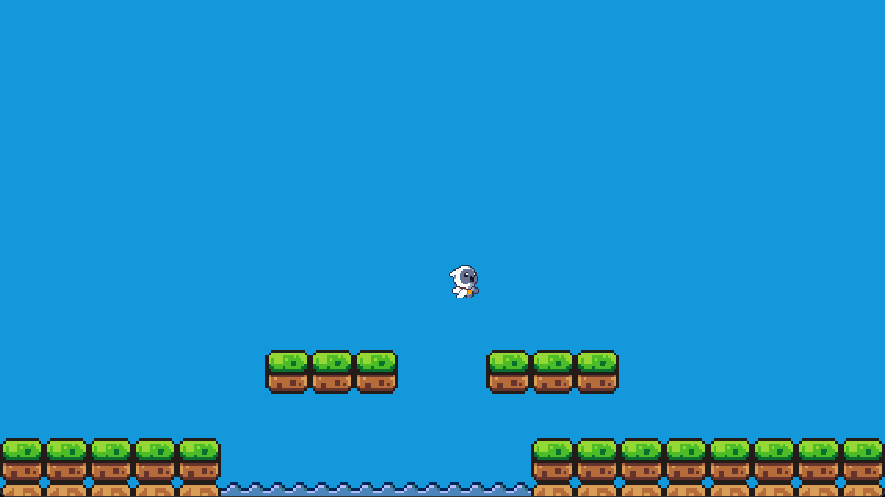

The goal of this project is to learn more about how game engines work under the hood. I wanted to take a bare-bones framework and build the systems and tooling needed for a 2D game engine essentially from scratch.
SFML (Simple and Fast Multimedia Library) is the perfect candidate to do that. Its API gives you what you need to easily render graphics and play audio in a C++ application, but the rest is up to you.
So far, I have made Pong and a basic platformer prototype with my engine, trying to make it scalable and modular along the way.
I started by creating an abstract GameObject class, which would be used for all objects rendered to the screen that can move and interact with other objects.
Another important feature was a state machine for game states (similar to Scenes in Unity or Levels in Unreal). I created the class GameState, which all custom states derive from.
GameStates handle the main game loop as well as rendering all objects. Along with the GameState class is a StateManager class which encapsulates a stack. The developer can push and pop states from this stack to switch "scenes" in their game.
This is essential for a game engine, because it allows developers to make custom states with differing logic and objects. My Pong game makes use of both of these systems. The ball and paddles are GameObjects, and I created a menu state and a main game state.
The next feature I wanted to add to the engine was animated objects. I did this by creating a class for individual animations and a class that controls switching between animations.
Animations can be looping or not, and the frame rate can be controlled. It works by separating a sprite sheet into individual IntRects (SFML class) for each sprite, and switching between these sprites to animate an object.
The GameObject class can either have a static sprite or animations. The most recent feature I added to my engine is a Tilemap system.
Similarly to animations, the Tilemap class separates a sprite sheet into individual tiles, which can be arranged with a 2D vector. This is a quick and easy way to lay out and design levels for a game.
Tilemaps also contain another 2D vector for defining which tiles are "collidable", and a method for checking a GameObject for collision with these tiles. These two systems (animation and tilemap) are used in my platformer prototype.
This project has been a great learning experience for me; it has taught me to think like an architect rather than just a programmer, and to write scalable and maintainable code. I was able to make use of my state and object classes to make two very different games in a short amount of time, which shows the flexibility of my systems.
I plan to continue adding features to the engine in my free time, and to develop more fleshed-out games with it.